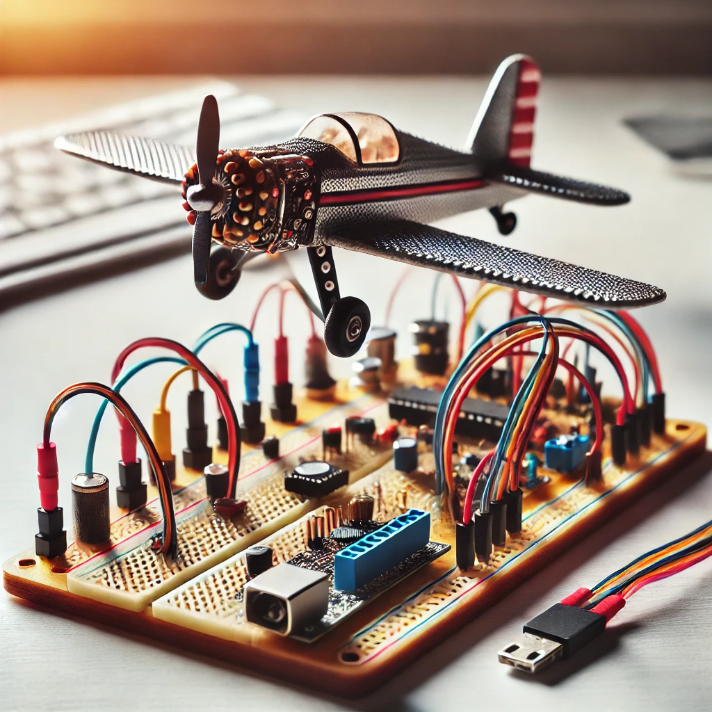

G-Wagon Met Controller
Een heel snelle, sensor-gestuurde RC-auto met draadloze besturing en obstacle-avoidance.

Een heel snelle, sensor-gestuurde RC-auto met draadloze besturing en obstacle-avoidance.
Interactieve simulatie van een verkeerslichtsysteem met handmatige en automatische bediening.

Een zwevend voertuig dat luchtstroom en draadloze besturing combineert voor unieke voortbeweging.

Dierachtig lopende robot met servo-aangedreven bewegingen en programmeerbare logica.

Schaalvliegtuig met draadloze besturing, lange vliegtijd , nauwkeurige manoeuvres en hoge snelheden.
Duurzame mini-trein die zonne-energie gebruikt om over een realistisch spoornet te rijden.